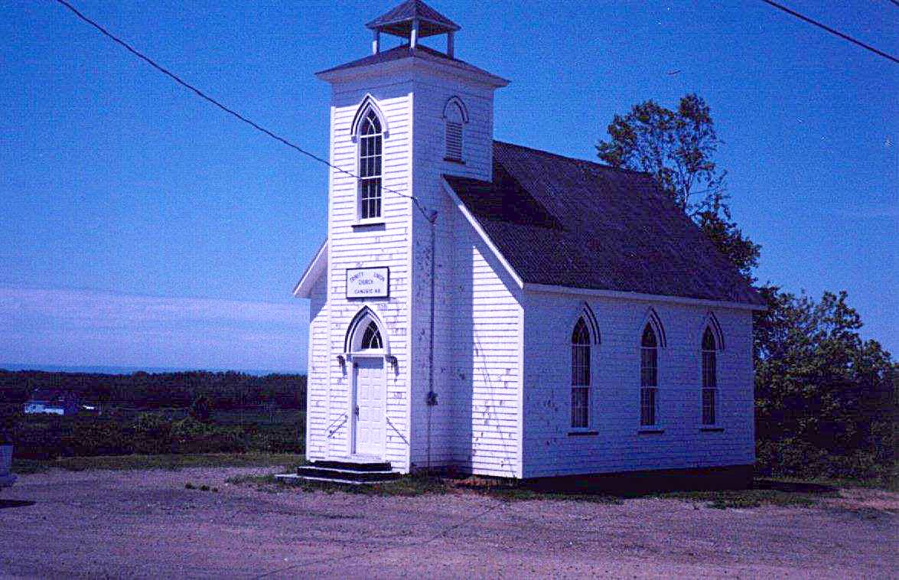

The Family Chronicle
No.60 February 12, 2004
________________

Trinity Union Church, Canobie
At first, church services were held in the local school but in 1899 this church was built and used by Presbyterians, Methodists and Anglicans. (It is now an Anglican Church).
Our Grandfather, Walter, was active in the church including being a Sunday school teacher. He is also reported to have been one of the first trustees and, according to the Chaleur history, cut the first lumber to start the building. The 1891 census shows Walter as Presbyterian.
I do not know where my Great Grandparents, John and Margaret Glendinning are buried but believe them to be buried in the New Bandon Cemetery where a number of their descendants are buried. George Glendenning told me that on a number of occasions bones were encountered when digging new graves in that cemetery. George also thinks that John Glendinning may have attended/been a member of the Methodist Church.
Thanks to Barry MacKenzie for the following item found in the Commercial of November 24, 1914
AND STILL THEY COME!
More Socks, Wristlets and Mittens Sent in For Our Soldiers
The ladies of Northumberland County continue to send to this office various articles of warm apparel to be forwarded to the young men who have volunteered for active service in Canada’s Second Contingent. Last week we received from Miss Katie Watling, 31 pairs socks, also 10 pairs wristlets and 4 pairs mittens, all home-knit, that had been collected by her from the people of Black River, Little Branch and Hexham.
With the advent of the cold weather, these comforts will doubtless be doubly appreciated by the lads who have signified their willingness to brave all the discomforts of a winter campaign in a foreign country. It has been truly said that “Let a man’s feet get cold and he is all cold.” Evidently this truism is realized by the ladies of our county, who are thus doing their part to prevent our boys having cold feet or hands while on the march or in the trenches; and to ensure them being in fit condition to enjoy the festivities at Berlin on their arrival their.
Following are the names of those who have contributed knitting for the soldiers.
Black River and Little Branch
Mrs. George Fowlie
Mrs. John G. Fowlie
Mrs. F. A. Fowlie
Mrs. R. J. McDonald
Mrs. Herbert Fowlie
Mrs. Hugh Cameron
Mrs. Jubal Watling
Mrs. Allan McKay
Emma McKay
Ruth Leis
Mrs. Donald McNaughton
Annie McKenzie
Mrs. Hugh McLean
Mrs. James Finno
Mrs. Kenneth McDonald
Mrs. Alex B. McDonald
Mrs. Donald McLean
Mrs. Kenneth McKnight
Mrs. James Godfrey
Mrs. Robert McDougall
Mrs. Hugh McDougall (Hexham.)
Mrs. Donald Watling
Mrs. Peter McKay
Katie S. Watling
Annie McKnight
Catherine McKnight
Mrs. Alex. Dick
Mrs. John McLean
Mrs. Malcolm Watling
Mrs. Robert Sullivan
Miss Tenie McLean
Family Herald
Congratulations to Barry MacKenzie and Janet Watling on the launch of their new journal, the Family Herald. Anyone wishing to subscribe should contact Barry at barrymack4@hotmail.com
The Family Herald and Weekly Star was a popular weekly newspaper of my day – a newspaper primarily for the agricultural community. It was about half the size of a regular newspaper but quite a thick paper. I would guess that it had 30 to 40 pages including some news, advertisements, “funnies”, recipes, etc. It was well read in our household.
The local paper in our household was the Chatham Gazette. I think that it was published twice a week. It was a regular sized paper but always seemed to have larger print than other newspapers. My sister, Grace, subscribed to the Gazette most of her life even though she had left Black River as a young woman.
First Radios
My sister, Lillian, recalled that Malcolm MacNaughton from the north side of Black River was the first one in the community to have a radio. People used to visit to listen and had to take turns listening through earphones. The next two radios were Herb Fowlie and Uncle Jim Watling.
Walter and Venetia bought the first radio at my home. It sat in the dining room near the back wall. A copper wire was run as an aerial from the eave of the house to a tall, slender pole at the gatepost near the henhouse.
The radio was powered, as I recall by a 6-volt car battery (was that the A Battery?), two B-Batteries cylindrical and about 3 inches in diameter, and a C-battery, which was the size of a box of soda.
The Chronicle is an occasional newsletter published by Don Glendenning It is designed to share information about my family, community and the times in which I grew up. While every effort is made to be accurate, errors are likely to occur. Comments, enquiries and information may be sent to 62 Queen Elizabeth Drive, Charlottetown, PEI, C1A 3A9. Tel: 902-892-5859 Email: don@glendenning.net Web: www.glendenning.net Feel free to make and pass along copies of this newsletter.